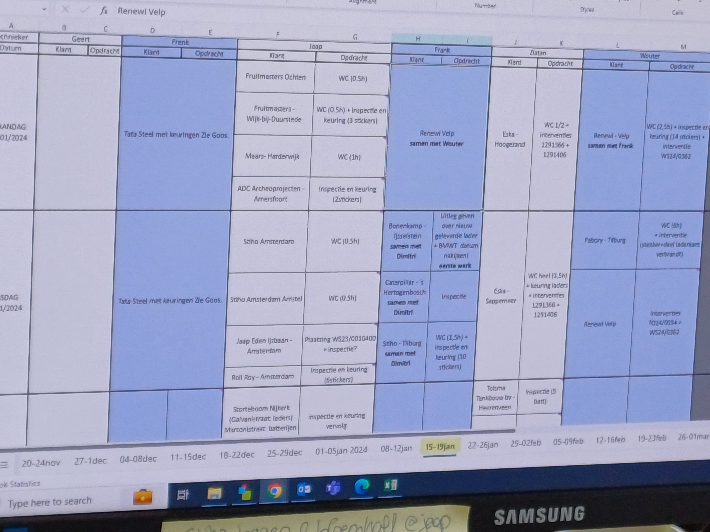

Voormiddag
Vandaag viel ik onder de hoede van Marjolein, een werknemer op de marketingafdeling. De afdeling stuurt werkbonnen naar reparateurs. Op deze werkbonnen staan er welke batterijen hersteld ('reverbished') moeten worden. Om het overzicht te bewaren wordt er per week een planning opgemaakt. Deze ziet er zo uit:

.Om miscommunicatie met de klant voorkomen, wordt het referentienummer van de herstelde batterij als opmerking in de planning op Excel geschreven.De planning kent enkele voor- en nadelen: zo is het een overzichtelijk, efficiënt systeem maar het verandert voortdurend. Het maken van een planning duurt lang en diegenen die dit opstellen dragen een grote verantwoordelijkheid. Inkomende mails van klanten checkt Marjolein via Outlook. Outlook wordt tevens door iedere afdeling gebruikt om de mails te checken. Kenmerkend zijn de kleuren in Outlook: op 'Customer Service' stelde iedere kleur een werknemer voor, op de marketingafdeling is dat de code voor een type (bv. afzending). Iedere werknemer op zijn afdeling heeft een andere kleur. Reparaties die moeten gebeuren van de klant zet ze in transferorder in Vario.
Rond half tien nam ze me mee om een herstelde batterij op te halen in het kleine magazijn. Ondanks het duidelijke systeem was deze zoek. Ik hielp mee te zoeken, maar bleek dat dit nog in een auto buiten het bedrijf lag. Referentienummers van batterijen die gerepareerd moeten worden, worden opgeschreven op post-itjes. Problemen met de klant omtrent een verkeerde reparatie worden meestal om half 9 of om 2 uur doorgegeven. Om half 9 kreeg ze al enkele telefoontjes. Ze controleert de reparateurs via de website "prodongle.com". De planning wordt opgesteld met o.a. Google Maps, waarmee de duur van de route die nodig is om van klant A naar klant B te rijden wordt berekend
.Om half 12 kreeg ik mijn eerste opdracht: de digitale vullijsten laten kloppen met papieren vullijsten. Dus overtypen waar nodig. Dit duurde niet zo lang, en was een nuttige bezigheid.
Nadien heb ik gekeken hoe Ingrid, een collega van Marjolein, transferorders ingaf en hierbij wat technische informatie gaf over batterijen.
Middagpauze
Om half 1 was het tijd voor de middagpauze.
Namiddag
Mijn dag in 1 woord
toekijken
Toekijken omdat ik vandaag vooral observeerde en weinig zelf mocht doen. Hopelijk is dit morgen omgekeerd!